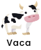
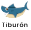
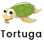
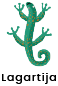

Objetivo de aprendizaje: identificar las características de los animales vertebrados.
Enunciado: completa el siguiente mapa conceptual arrastrando las opciones, según la clasificación de los animales vertebrados, a los espacios correspondientes.
Gira tu celular a modo horizontal para realizar esta actividad
Mamíferos
Aves
Reptiles
Cuerpo cubierto con escamas, lisos o con conchas, respiración bronquial.
Cuerpo cubierto de plumas, respiración pulmonar, se desplazan por el aire.
Respiración pulmonar, reptan, su hábitat es la tierra y el agua.



